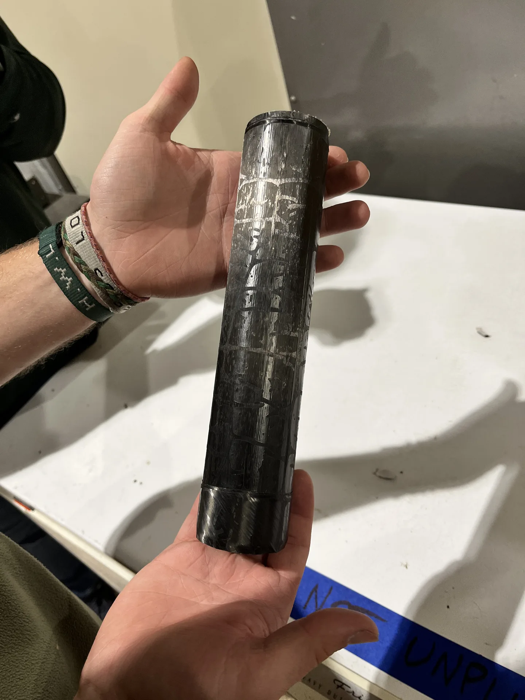
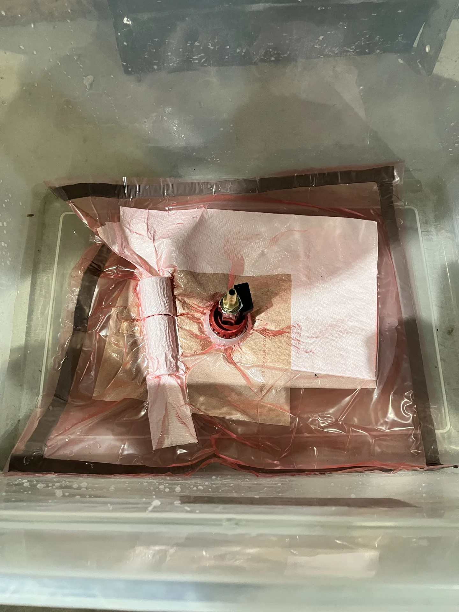

Prepreg Carbon Fiber Test Airframe
A 12-inch prepreg carbon fiber tube built for the CSU IREC team as a small-scale test article. It was used to prove out our layup, vacuum bagging, oven cure, and demold process before committing to a full-length airframe.
My focus: Co-wrote the layup process sheet, led execution and on-the-fly process changes during the layup, owned materials and equipment readiness, and set direction for the team.

- Material
- Toray 2510 UD T700G prepreg
- Ply schedule
- [0/90/0/45/−45/0/90/0], 8 plies
- Mandrel
- 1.910 in OD aluminum, 12 in long
- Nominal wall
- 0.048 in (8 × 0.006 in)
Purpose
The team's full-scale composite procedure was written for longer mandrels and larger tubes. Before building flight hardware, we scaled it down to a 12-inch test article so we could run the whole workflow once under control. That included material handling, ply cutting, debulking, bagging, cure, demold, finishing, and final measurement. Every step was logged so the results could be traced back to the process.
Mandrel prep & layup
The aluminum mandrel was inspected and degreased with 99% IPA, then given 3–4 buffed coats of Partall Paste #2 release wax. The prepreg came out of cold storage and warmed to room temperature before the bag was opened, and the out-life clock was logged when it was opened. Plies were cut to the measured OD rather than an assumed diameter. They were hand-laid in the specified orientations, working out air and wrinkles from the center outward, and debulked under vacuum every four plies.

Vacuum bagging
The bagging stack was non-perforated release film over the final ply, then breather, then high-temperature bagging film sealed with tacky tape. A vacuum port and a part-mounted Type-K thermocouple were installed. Before cure, the bag had to pass a leak check: less than 2.0 inHg of vacuum drop over five minutes with the pump isolated. The part then sat under vacuum for at least an hour before going into the oven.

Cure
We used a single-stage cure: ramp at 1–5 °F/min to 270 ± 10 °F, hold for 120 minutes, then cool at no more than 5 °F/min to 130 °F before releasing vacuum. The hold timer ran off the part thermocouple, not oven air temperature. Vacuum was logged at least every 15 minutes. At roughly 5,000 ft elevation the sea-level target of 28 inHg isn't reachable, so we used an elevation-corrected vacuum target instead.
Demold & finishing
To release the tube, the cured laminate and mandrel went into a freezer together. Aluminum contracts more than carbon fiber when it cools, so the mandrel pulls away from the inside of the tube and the part can be worked off by hand without impact tools. After a visual check for voids, wrinkles, bridging, and resin-rich or resin-starved areas, the tube was wet-sanded outdoors. It was then cleaned, dried, and measured against a metrology form covering length, OD, wall thickness, ply count and sequence, and surface condition.
Results
TBD. Final metrology and inspection results will be added here.